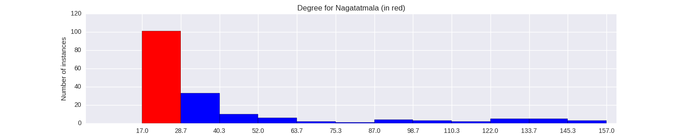

Quantiative Wayang Dictionary
Nagatatmala
Terms of address: Raden, Bambang
Type: Human
Origin: Java
Notes on the Sanskrit version: Not mentioned in the Indian Mahabharata.
Alternative names: Nagabanda, Nagapustaka
Description in the Javanese version: A son of Antaboga who married [Mumpuni]. She was originally married to Yamadipati. In one version, he had an affair with [Mumpuni]. After being caught he was sentenced to death and then killed by Batara Guru, to be revived by his mother. In another version, he had the help of Antaboga, who created a fake [Mumpuni] that went on pretending to be Yamadipati's wife until she died suddenly. These actions were eventually discovered by his behavior was forgiven for his role in helping to defeat [Karungkala], a giant wreaking havoc in the heavens.
Found in the follwing lakon (stories):
Family relationships
Mother: Supreti
Father: Antaboga
Siblings: Nagagini, Pertiwi, Pratiwanggana
Consorts: Mumpuni
Offspring: Antawirya
More information
Ruler of: Renggapura
Sources: Ensiklopedi Wayang Purwa, pp. 355-356; Mengenal Gambar Tokoh Wayang Purwa, p. 169; Ensiklopedi Wayang Indonesia, pp. 229-232 (Vol. VI); Rupa dan Karakter Wayang Purwa, pp. 152-153
Network measurements for Nagatatmala
| Measurement | Value | |
|---|---|---|
| Degree | 25.0 |  |
| Weighted Degree | 32.0 |  |
| Betweeness Centrality | 0.0 |  |
| Eigenvector Centrality | 0.285062675186 |  |
{kind=link}
Characters in the same adegan as Nagatatmala
| Character | Link weight |
|---|---|
| Character | Link weight |